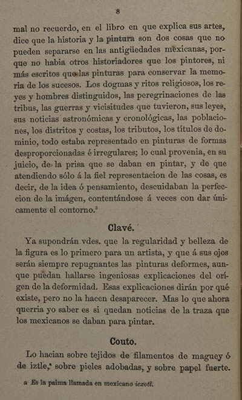

|
 |
mal no recuerdo, en el libro en que explica sus artes, dice que la historia y la pintura son dos cosas que no pueden separarse en las antigüedades mexicanas, porque no habia otros historiadores que los pintores, ni más escritos que las pinturas para conservar la memoria de los sucesos. Los dogmas y ritos religiosos, los reyes y hombres distinguidos, las peregrinaciones de las tribus, las guerras y vicisitudes que tuvieron, sus leyes, sus noticias astronómicas y cronológicas, las poblaciones, los distritos y costas, los tributos, los títulos de dominio, todo estaba representado en pinturas de formas desproporcionadas é irregulares; lo cual provenia, en su juicio, de la prisa que se daban en pintar, y de que atendiendo sólo á la fiel representación de las cosas, es decir, de la idea o pensamiento, descuidaban la perfección de la imágen, contentándose á veces con dar únicamente el contorno.3 Clavé Ya supondrán vdes. que la regularidad y belleza de la figura es lo primero para un artista, y que á sus ojos serán siempre repugnantes las pinturas deformes, aunque puedan hallarse ingeniosas explicaciones del orígen de la deformidad. Esas explicaciones dirán por qué existe, pero no la hacen desaparecer. Mas lo que ahora querria yo saber, es si quedan noticias de la traza que los mexicanos se daban para pintar. Couto Lo hacian sobre tejidos de filamentos de maguey ó de iztle,a sobre pieles adobadas, y sobre papel fuerte. a Es la palma llamada en mexicano icxotl.
|
| |
1 | 2 | 3 | 4 | 5 | 6 | 7 | ... | 105 | Siguiente |
||
| Arriba |
||||||||||||